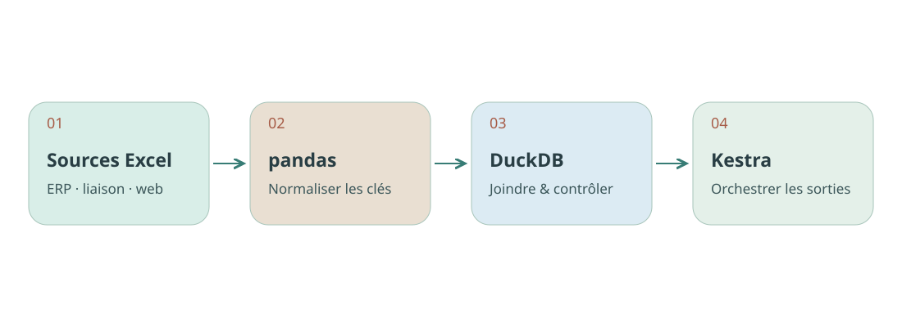

Schéma explicatif du périmètre décrit ; les environnements sont précisés dans l’étude.
Le besoin et ma contribution
Les référentiels décrivent les mêmes produits avec des identifiants et des doublons différents. J’ai formalisé le rapprochement dans un workflow Kestra et ajouté des vérifications avant la restitution des résultats.
Un workflow explicite
- Conversion des fichiers et vérification des colonnes attendues.
- Normalisation des identifiants avec pandas, puis déduplication SQL avec ROW_NUMBER et QUALIFY dans DuckDB.
- Jointures, calcul du chiffre d’affaires et segmentation des prix par z-score.
- Contrôles aux étapes sources, rapprochement, chiffre d’affaires et segmentation ; exports des deux catégories en parallèle.
Planification et gestion des échecs
Les tâches DuckDB concernées disposent de trois reprises à trente secondes d’intervalle. Le cron est configuré à 09 h le 15 de chaque mois, fuseau Europe/Paris. Un gestionnaire journalise les erreurs ; l’alerte externe n’est pas implémentée dans ce workflow.
Résultats du jeu fourni
La segmentation produit 30 références à prix atypique et 684 références ordinaires. Le chiffre d’affaires est calculé dans les données du scénario ; il ne mesure pas un gain commercial créé par le projet.
Généraliser les contrôles
Certains tests attendent des volumes fixes propres au snapshot de travail. Pour accueillir de nouvelles sources ou périodes, ces assertions doivent devenir des règles adaptées aux données, avec suivi des rejets et alertes.
Code et éléments de preuve
Les 12 sorties de chiffre d’affaires conservées donnent toutes 70 568,60 €. Le relevé ci-dessous indique les noms de fichiers, empreintes et volumes contrôlés, sans recopier les données source.
Relevé de vérification des sorties Kestra
Les extraits et résultats ci-dessous proviennent des livrables du projet, consultés le 16 novembre 2026. Les traitements n’ont pas été réexécutés pour cette présentation.